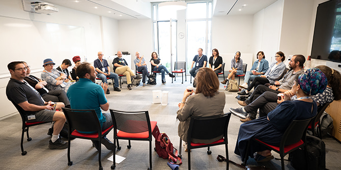

תצפית מתל אל-פול (צילום: סימנים הפקות)
תצפית מתל אל-פול (צילום: סימנים הפקות)
העיר ירושלים מכילה "מרחבי גבול" בכמה מישורים – דתיים, חברתיים, תרבותיים, פוליטיים, דמוגרפיים, סמליים ועוד – והיא מיקרוקוסמוס לחברה הישראלית, שבו נפגשות קבוצות חברתיות מגוונות. מרחבי גבול וקווי תפר יכולים לקבל ביטויים שונים, והם מזמנים מפגש בין סיפורים היסטוריים, אמונות, ערכים וקבוצות אינטרס, מעוררים סוגיות אנושיות ואתיות וקוראים למעשי מנהיגות.
בתוכניות המנהיגות המגוונות של מכון מנדל למנהיגות משתתפים עמיתים מקהילות וממגזרים שונים בחברה בישראל, ובהם מנהיגים מהקהילה החרדית, מובילים בחינוך הבלתי פורמלי, בעלי תפקידים במסלולי הכשרת המורים במכללות ובאוניברסיטאות, בתחום התרבות היהודית וקציני צה"ל. ימי הלימוד המשותפים יוצרים עבור העמיתים סביבה מקצועית מאתגרת, חושפים אותם לשדות הפעולה שבהם פועלות תוכניות המכון ומהווים הזדמנות למפגש ולשיח ביניהם. ימים אלו מחזקים את ההיכרות עם סוגיות יסוד בחברה הישראלית ומאפשרים דיון מאתגר בנושאי ליבה קונפליקטואליים, כחלק מפיתוח המנהיגות.
 עמיתי תוכניות מכון מנדל למנהיגות (צילום: סימנים הפקות)
עמיתי תוכניות מכון מנדל למנהיגות (צילום: סימנים הפקות)
ביום הלימוד הנוכחי "יצאנו לשטח" בקבוצות מעורבות, למקומות שונים בירושלים, כדי להביט במקרי מבחן שבהם בא לידי ביטוי מתח או קונפליקט. באמצעות ההתבוננות בהם ומתוך התייחסות ל"שולחן העבודה" של העמיתים קיימנו דיון שמטרתו לחלץ עקרונות מנהיגות המודעת למורכבויות שבה היא פועלת. הסיורים שימשו כפדגוגיה המקדמת הבנה עמוקה וחשיבה בתוך מרחבי התפר עצמם, ואלה יצרו חיבורים חדשים ומעשירים ב"עולם המעשה", כפי שתיארה אחת העמיתות: "תמיד אני שומעת על המקומות שבהם היינו רק בחדשות, ולא האמנתי שאפסע בהם ואחשוב על הקונפליקט באופן כל כך ברור". דרך הסיורים והדיונים עליהם הביעו העמיתים גם רגשות של תעוזה ופחד, ואת הצורך לקחת אחריות.
בין הסיורים שאליהם יצאו העמיתים היה ביקור בהר הבית – אחד המקומות הטעונים בעולם מבחינת החיכוך הבין-דתי וניסיונות האתגור של גבולותיו. בהר הבית בחנו המשתתפים את העיצוב והבדיקה של הגבולות הפוליטיים, הדתיים והחברתיים בהר ובסביבתו, וכיצד מנהלים מרחב משותף – קטן בגודלו ואחד העצומים בכוח השפעתו העולמית.
בהר הרצל צללו המשתתפים לסיפורים הפחות מוכרים ובחנו את שאלת ההכללה וההדרה של הזיכרון הממלכתי – שאלה עם תשובות דינמיות המתאימות את עצמן לתפיסות החברתיות של כל תקופה. הסיור, בהובלת אביב וישקובסקי, מדריך החוקר את עיצוב הזיכרון הקולקטיבי בחברה הישראלית, התמקד בתהליך העיצוב של ההר ובהתפתחותו של הזיכרון וגבולותיו על-ידי מעצבי הממלכתיות הישראלית לאורך קיומה.
 סיור בהר הרצל (צילום: סימנים הפקות)
סיור בהר הרצל (צילום: סימנים הפקות)
בסיור לצד המסילה עלו העמיתים על הרכבת הקלה, בהדרכתו של ד"ר מריק שטרן, גאוגרף עירוני-פוליטי החוקר ערים בסכסוך, פוליטיקה עירונית ויחסים בין קבוצות במרחב העירוני. הרכבת הקלה, המחברת בין קצות העיר, חוצה בקלילות מרחבי גבול מגוונים ורבים. נקודות המגע הללו בין עולמות שונים בתוך ירושלים, השזורות לאורך המסילה, מאפשרות הצצה מרתקת אל המורכבות של העיר. בעודם עולים ויורדים מן הרכבת, פגשו משתתפי הסיור את המרחב הירושלמי, שבו הגבולות נעים בין ההיסטורי, לדתי, לתודעתי, והחומות הן לעתים מוחשיות ולעתים "שקופות", אך בהחלט נוכחות, כדברי אחת המשתתפות: "רכבת קלה – ששום דבר לא קל בה".
סיור אחר עסק בעיצוב הגבולות של הטבע בתוך העיר ירושלים, ובהתרחשויות החברתיות, החינוכיות והפיזיות הנובעות מעצם חציית הגבול. הסיור, שהתנהל ברכיבה על אופניים לאורך השביל המקיף את העיר, אפשר מרחב תנועה מסוג אחר ובתוך כך גם הרכבת משקפיים אחרים לבחינת הנושא.
במהלך הסיורים עלו צדדים שונים לביטוי "עיר שחוברה לה יחדיו": ערבוביית הזהויות ונקודות המפגש מהצד האחד, והתרופפות של חיבורים עד כדי התנגשות מהצד האחר. מפגשי יום הלימוד נתנו ביטוי לכמיהה של יהודה עמיחי בשירו "למה ירושלים תמיד שתיים?", כדבריו:" וַאֲנִי רוֹצֶה לִחְיוֹת בִּירוּשָלַיִם שֶל אֶמְצַע | בְּלִי לַחְבֹּט אֶת רֹאשִי לְמַעְלָה | וּבְלִי לִפְצוֹע אֶת רַגְלַי לְמַטָּה".

עמיתי תוכנית מנדל למנהיגות באקדמיה בהכשרה להוראה (צילום: סימנים הפקות)
עבור עמיתי תוכניות מכון מנדל למנהיגות הייתה חשיבות מרכזית בעצם המפגש עם עמיתיהם בתוכניות המקבילות – דבר שאפשר להם לשוחח על סוגיות של מנהיגות באזורי קונפליקט מתוך זוויות ראייה שונות מאוד, ובמשותף לבחון את הרחבת הפרספקטיבות "והארת נקודות העיוורון". מתוך הדיונים הללו עלו חיבורים חדשים, שדרכם יכלו לבחון את תחומי ההשפעה החברתית שאליהם הם שואפים להגיע, ואת האופי והמידה של ההשפעה שהם מבקשים להשיג, ובכך ליצור שותפויות שיסייעו בהתמודדויות דומות באזורי פעילות שונים. הייתה זו הזדמנות עבור העמיתים לצאת מאזורי הנוחות שלהם ולקיים דיון פורה גם כאשר "הטמפרטורה" של הדיון עלתה.
{kind=link}
{kind=link}